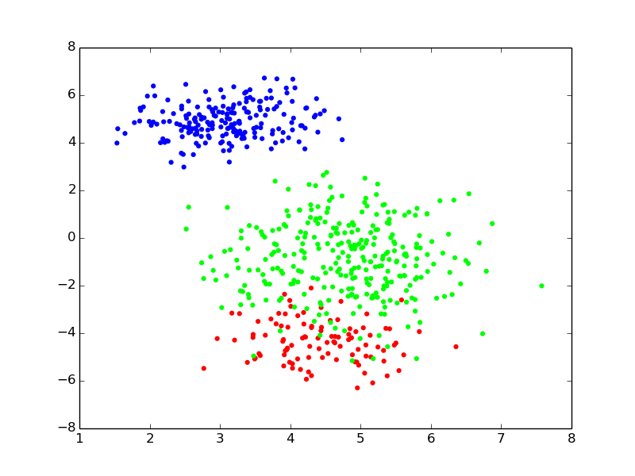
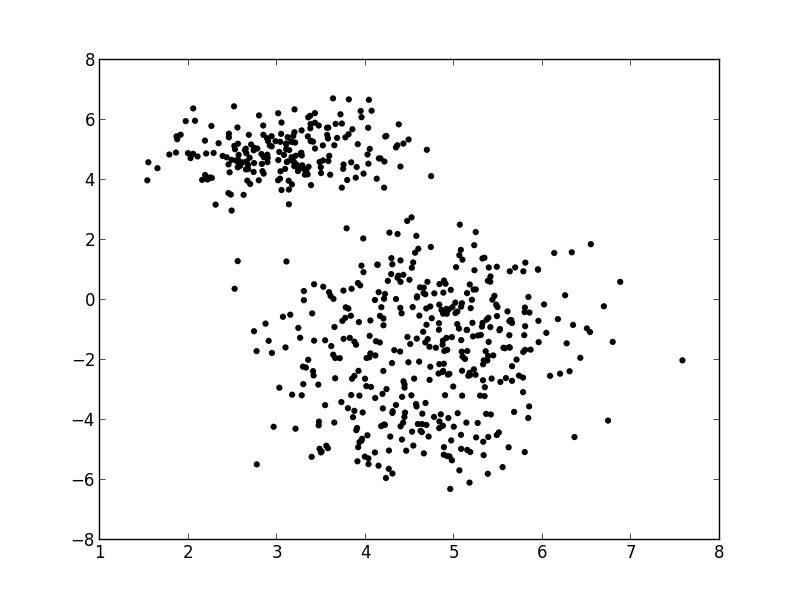
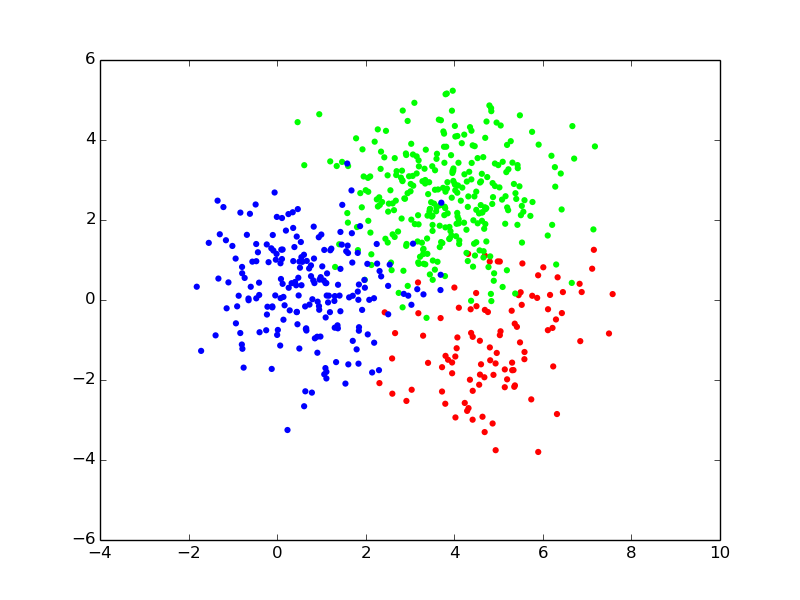
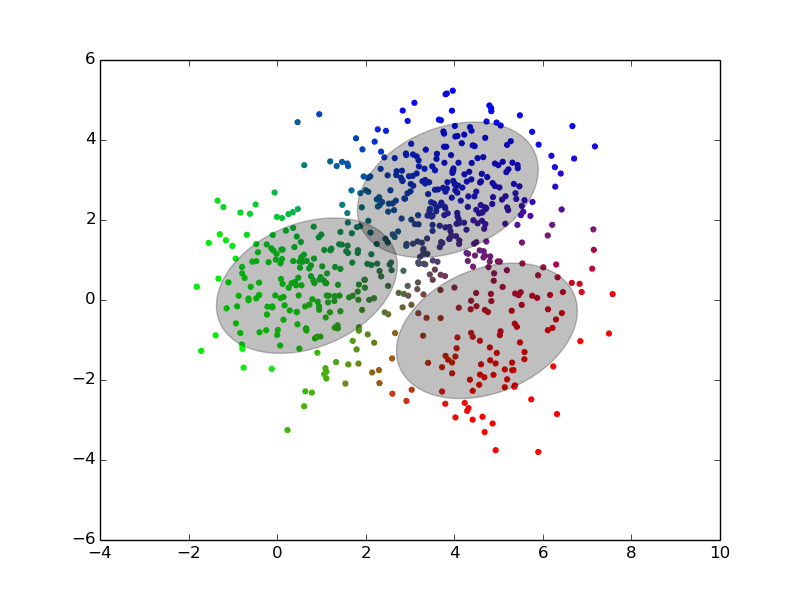
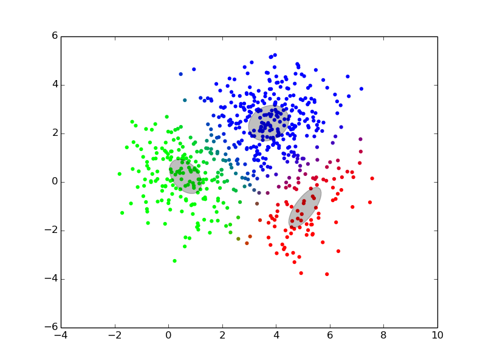
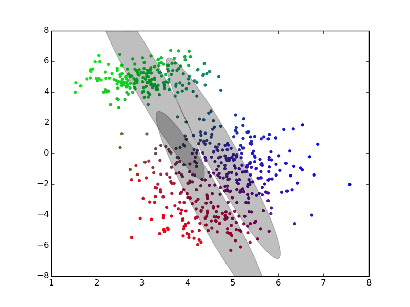
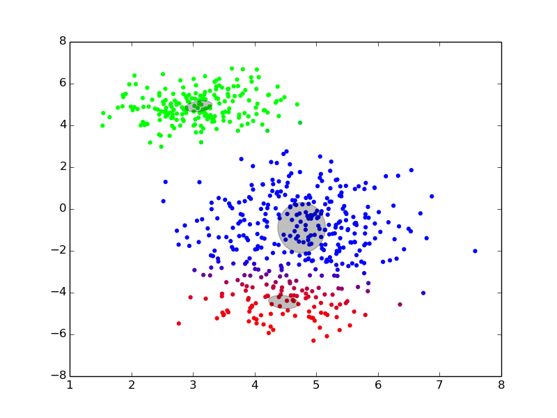
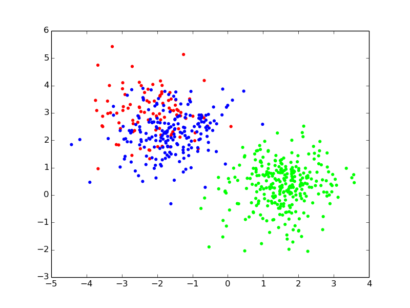
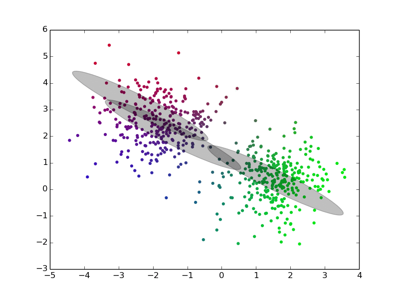
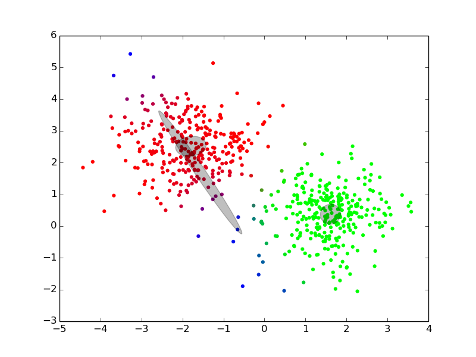

Please wait while the marmots are preparing the hot chocolate…
# {image-full darkened /black-bg /no-status title-slide} // commentaire
- −
-
## What's on the menu today? {#overview overview}
- Probabilities and normal distribution
- Gaussian mixture models
- EM and learning mixture models from data
- Choosing the number of components
- Dirichlet processes
- Examples?
# Just Some Reminders (Probably Almost Surely)
## Probability Rules, Measure Theory
@svg: floatrightbr,aa proba/potato-xandy.svg 245px 135px
@svg: floatrightbr,bb proba/potato-xsumy.svg 245px 285px
- Product rule{prod}
- $p(X, Y) = p(X|Y) \, p(Y)$ = $p(Y|X) \, p(X)$
- Marginalization, Sum rule{sum}
- $p(X) = \sum_{Y \in \mathcal{Y}} p(X,Y)$
- $p(X) = \int_{Y \in \mathcal{Y}} p(X,Y)$
- Bayes rule{bayes}
- $p(Y|X) = \frac{p(X|Y) \, p(Y)}{p(X)}$
- $p(X) = \sum_{Y\in \mathcal{Y}} p(X|Y) \, p(Y)${denom}
- @anim: .aa + .prod | .bb + .sum | .app | .bayes | .denom
# Gaussian/Normal Distribution
## Gaussian/Normal Distribution (1D)
@svg: gaussian/normal-distribution-stddev.svg 800px 500px {floatrightbr fullabs}
## Gaussian/Normal Distribution (1D)
@svg: gaussian/normal-distribution-stddev.svg 200px 200px {floatrightbr}
- Normal Distribution or Gaussian Distribution{bb}
- $\mathcal{N}(x|\mu,\sigma^2) = \frac{1}{\sqrt{2\pi \sigma^2}} exp(-\frac{(x-\mu)^2}{2 \sigma^2})$
- Is-a probability density{bbb}
- $\int_{-\infty}^{+\infty} \mathcal{N}(x|\mu,\sigma^2) dx = 1${bbb}
- $\mathcal{N}(x|\mu,\sigma^2) > 0${bbb}
- Parameters{cc}
- $\mu$: mean, $E[X] = \mu$
- $\sigma^2$: variance, $E[(X -E[X])^2 ] = \sigma^2$
- @anim: .bb |.bbb |.cc
## Multivariate Normal Distribution
- D-dimensional space: $x = \{x\_1, ..., x_D\}$
- Probability distribution{slide}
- $\mathcal{N}(x|\mu,\Sigma) = \frac{1}{\sqrt{(2\pi)^D \|\Sigma\|}}\; exp(-\frac{(x-\mu)^T\Sigma^{-1}(x-\mu)}{2})$
- $\Sigma$: covariance matrix
- @anim: .hasSVG
@svg: floatleft gaussian/multivariate-normal.svg 800px 250px
# Gaussian Mixture Models
## Gaussian Mixture Model (1D)
- Density: $p(x | \theta) = \sum_{k=1}^K w\_k \;\mathcal{N}(x|\mu\_k,\sigma\_k^2)$ {slide}
- Parameters: $\theta = (w\_k, \mu\_k, {\sigma\_k}^2)_{k=1..K}$ {slide}
@svg: gmm/two-gaussians-gmm.svg 800px 400px {unpadtop50}
## Sampling from a 2D GMM

- {no}
- Density: $p(x | \theta) = \sum_{k=1}^K w\_k \;\mathcal{N}(x|\mu\_k,\Sigma\_k)$
- Parameters: $\theta = (w\_k, \mu\_k, \Sigma\_k)_{k=1..K}$
- For each point $i$ to be generated {clearboth}
- draw a **component index** (i.e., a color): $z_i \sim \operatorname{Categorical}(w)$
- draw its **position** from the component: $x\_i \sim \mathcal{N}(x|\mu\_{z\_i},\Sigma\_{z_i})$
## Only Positions are Observed {pfree}

- For each point $i$ {clearboth}
- draw a component/color: $z_i \sim \operatorname{Categorical}(w)$
- draw a position: $x\_i \sim \mathcal{N}(x|\mu\_{z\_i},\Sigma\_{z_i})$
- Finding $z$ seems impossible,
finding the “best” $\theta$ might be feasible? {slide}
## GMM: Probabilistic Graphical Model
@svg: graphical-models-dpgmm/dp-finite-no-prior.svg 800px 200px
- Renamed
- $w$ → $\beta$ (vector of component weights)
- $(\mu\_k, \Sigma\_k)$ → $\phi_k$ (parameters of component $k$)
- Reminder: for each point $i$ {clearboth}
- draw a component/color: $z_i \sim \operatorname{Categorical}(\beta)$
- draw a position: $x\_i \sim \mathcal{N}(x|\phi\_{z\_i})$
# Learning/Inference
finding the best $\theta$
## Maximum Likehood in GMM
- From a set of observed points $x = \\{x\_i\\}\_{i=1..N}$
- Maximize the likelihood of the model {libyli}
- NB: $\mathcal{L}(\theta | x) = p(x | \theta)$
- NB: $\operatorname{arg max}\_{\theta}\mathcal{L}(\theta | x) = \operatorname{arg max}\_{\theta}\log \mathcal{L}(\theta | x)$
- indep: $\log p(x | \theta) = \log \prod\_{i=1}^N p(x\_i | \theta) = \sum\_{i=1..N} \log p(x\_i | \theta)$
- mixture: $\log p(x | \theta) = \sum\_{i=1}^N \log \sum\_{k=1}^K w\_k \; \mathcal{N}(x\_i | \phi\_k)$
- No closed form expression → need to approximate{slide}
# Expectation
Maximization
## Expectation-Maximization
- Approximate inference by local optimization
- converges to local optimum
- needs a “good” initialization
- Handling parameters and latent variables differently {slide}
- single (point) estimate of the parameters $\theta$
- distribution estimate of the latent variables $z$
- Two-step iterative algorithm {libyli slide}
- init: select a value for the parameters $\theta^0$
- E step:
- compute the distribution over the latent variables
- i.e., $\forall i,k \;\; p(z\_i = k | \theta^t)$
- these probabilities are called the “responsibilities”
- M step:
- find the best parameters $\theta$ given the responsibilities
- i.e., $\theta^{t+1} = \operatorname{arg max}\_{\theta} $
## EM iterations



## EM iterations


## EM iterations



## EM, Gibbs Sampling, Variational Inference {densetitle}
@svg: media/em-gibbs-variational.svg 800px 500px {unpademgibbsvariational}
- @anim: #header, #em | #eme | #emm | #gibbs | #gibbsloop | #cgibbs | #variational
# Beyond EM, using prior
## Prior on GMM
@svg: graphical-models-dpgmm/dp-finite-no-prior.svg 200px 200px {floatright light}
@svg: graphical-models-dpgmm/dp-finite.svg 200px 200px {floatright other}
- It's all about prior
- Intution in EM
- disappearing component
- “minimal” weight
- “minimal” variance
- {no notslide clearboth}
- We virtually add a few observations to each component {slide}
- $\alpha$: causes the weights $\beta$ to never be zero {slide}
- Dirichlet distribution: $\beta \sim \operatorname{Dirichlet}(\alpha)$
- $H$: adds some regularization on the variances $\Sigma_k$ {slide}
# … unfold
@svg: graphical-models-dpgmm/dp-finite.svg 200px 200px {other}
@svg: graphical-models-dpgmm/dp-finite-split.svg 200px 200px {other}
# Dirichlet Processes
## From GMM to DPGMM
@svg: graphical-models-dpgmm/dp-finite-split.svg 200px 200px {floatright light}
- Plain GMM
- the number of component $K$ needs to be know
- need to try multiple ones and do model selection
- (prior are not handled by EM)
- {no clearboth}
@svg: graphical-models-dpgmm/dp-split.svg 200px 200px {floatright other clearboth}
- Dirichlet Process GMM
- a GMM with an infinity of components
- with a proper prior
- cannot use EM for inference (infinite vectors)
# What is a Dirichlet Process, finally
## Dirichlet Process
@svg: graphical-models-dpgmm/dp-split.svg 200px 200px {floatright}
- What? {slide}
- a distribution over distributions
- a prior over distributions
- two parameters
- a scalar $\alpha$, the “concentration”
- a “base” distribution $H$ (any type)
- a draw from a DP is a countably infinite sum of Diracs
- Related formulations {libyli slide}
- Definition: complicated :)
- Stick breaking process (GEM)
- as shown on the graphical model
- e.g., a prior on the values of the weights
- Chinese Restaurant Process (CRP)
- how to generate the $z_i$, one by one, in sequence
- Polya Urn
## Definition Example (Wikipedia)
@svg: graphical-models-dpgmm/example-wikipedia.svg 500px 400px {floatright}
Draws from the Dirichlet process DP(N(0,1), alpha). Each row uses a different alpha: 1, 10, 100 and 1000. A row contains 3 repetitions of the same experiment.
## Stick breaking process (GEM)
@svg: graphical-models-dpgmm/dp-split.svg 200px 200px {floatright}
- Each “atom” drawn from $H$
- Infinite vector drawn from a GEM process
- $p\_1 \sim Beta(1, \alpha)$ ; $\beta\_1 = p\_1$
- $p\_2 \sim Beta(1, \alpha)$ ; $\beta\_2 = (1 - \beta\_1) * p\_2$
- $p\_3 \sim Beta(1, \alpha)$ ; $\beta\_3 = (1 - \beta\_1 - \beta\_2) * p\_3$
- ...
- and $\forall k \;\; \Phi_k \sim H$
- Denoted $\beta \sim GEM(\alpha)$
- then $G = \sum^\infty\_{k=1} \beta\_k \delta\_{\Phi\_k}$ is a draw from $DP(H, \alpha)$
- (GEM for Griths, Engen and McCloskey)
# Polya Urn?
## Chinese Restaurant Process (CRP)
- Gibbs sampling friendly
- easy to get $p(z\_i | z^{-i}, ...)$
- $p(z\_i | z^{-i}) = ...$
/ − will be replaced by the author − will be replaced by the title